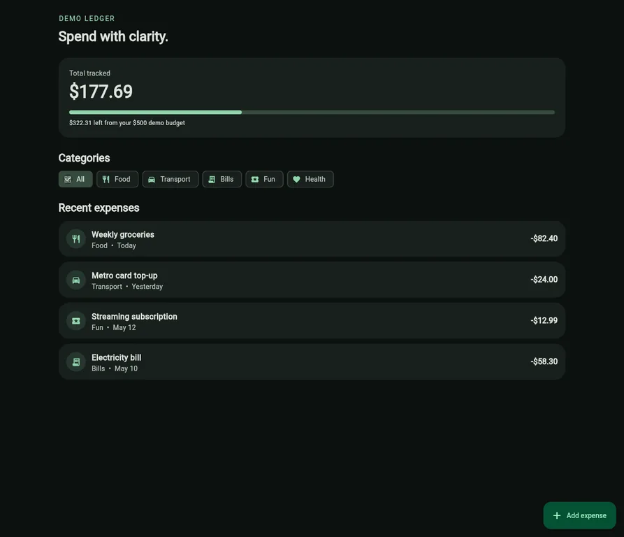

Expense Tracker
Flutter prototype · Dart, Material 3, GitHub Pages

What it is
A calm, focused expense dashboard designed to make everyday spending easier to scan. It presents a demo budget summary, category filters, recent records and a compact add-expense flow.
Engineering approach
- Feature-first structure keeps expense models, the repository contract, controller state and presentation concerns easy to navigate.
- Totals and filtering are calculated in a testable
ChangeNotifiercontroller rather than duplicated in widgets. - The budget card remains consistent when users filter categories; filters change the list without changing the tracked-spending basis.
- Expense entry provides field-level validation, rejects non-finite values, handles empty results and stays usable in short viewports with a scrollable dialog.
- GitHub Actions runs analysis, tests and the same release web build used for GitHub Pages deployment.
Scope and next step
This is intentionally a web-first interaction and architecture prototype backed by in-memory mock data. New records reset on refresh; date-aware accounting, persistence and Android release signing are follow-up production work.
Technology
Flutter, Dart, Material 3, ChangeNotifier, feature-first architecture, GitHub Actions and GitHub Pages.